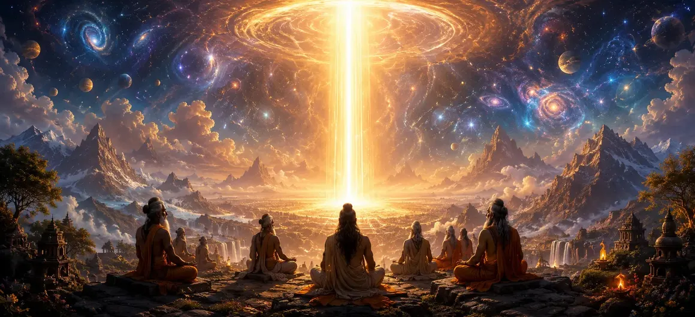

शिव का सिद्धांत - भाग 1
वायवीय संहिता का इकतालीसवाँ अध्याय शिव तत्व - भगवान शिव के पूर्ण आध्यात्मिक सिद्धांत - की गहन खोज शुरू करता है।
ऋषि वायु महादेव की उत्कृष्ट प्रकृति को उजागर करते हैं, यह बताते हुए कि वह समय, स्थान और अभूतपूर्व अभिव्यक्ति से परे कैसे मौजूद हैं।
यह अध्याय ब्रह्मांड को नियंत्रित करने वाली सर्वोच्च वास्तविकता को समझने के लिए आवश्यक आवश्यक दार्शनिक रूपरेखा स्थापित करता है।
अध्याय 41 की मुख्य बातें
शिव तत्व
भगवान शिव की पूर्ण आध्यात्मिक वास्तविकता को उजागर करता है।
उत्कृष्ट अस्तित्व
सभी सांसारिक सीमाओं से परे शिव के अस्तित्व का अन्वेषण करता है।
निर्गुण और सगुण
निराकार पूर्णता और उसकी प्रकट कृपा का विवरण।
कॉस्मिक फ़ाउंडेशन
शिव को समस्त सृष्टि के अंतर्निहित आधार के रूप में दर्शाता है।
दार्शनिक गहराई
आध्यात्मिक साधकों के लिए कठोर शैव ऑन्टोलॉजी प्रदान करता है।
कथा प्रवाह
शिव के सिद्धांत पर अध्याय 42 - भाग 2 में निर्बाध रूप से आगे बढ़ता है।
इस अध्याय में मुख्य विषय
परम शिव तत्व का परिचय
ऋषि वायु ने भगवान शिव को परम सत्तावादी वास्तविकता बताते हुए शिव तत्व पर प्रवचन शुरू किया, जिससे सब कुछ उत्पन्न होता है और जिसमें सब कुछ विलीन हो जाता है।
यह सिद्धांत न तो जन्मा है और न ही क्षय के अधीन है, स्वयं-प्रकाशमान चेतना से चमकता है।
समय और स्थान से परे अस्तित्व
कालानुक्रमिक प्रगति और स्थानिक आयामों से बंधे नश्वर प्राणियों के विपरीत, शिव समय और स्थान के सर्वोच्च स्वामी-महाकाल के रूप में मौजूद हैं।
वह सृजन, संरक्षण और विघटन के ब्रह्मांडीय चक्रों का शाश्वत गवाह है।
निराकार निर्गुण पहलू
अपनी उच्चतम अव्यक्त अवस्था में, शिव निर्गुण हैं - भौतिक गुणों से रहित, शुद्ध, मौन और वैचारिक विचार की समझ से परे।
यह मूक वास्तविकता पूर्ण शांति और अनंत चेतना का प्रतिनिधित्व करती है।
करुणामय सगुण रूप
भक्तों के प्रति असीम करुणा के कारण, वही निराकार पूर्ण सगुण रूप धारण करता है, पूजा प्राप्त करने और कृपा प्रदान करने के लिए गुणों के साथ प्रकट होता है।
यह दोहरा पहलू सीमित साधक और अनंत परमात्मा के बीच की दूरी को पाटता है।
शिव सार्वभौमिक आधार के रूप में
शिव तत्व संपूर्ण ब्रह्मांड के अंतर्निहित ताने-बाने के रूप में कार्य करता है, जो सभी ब्रह्मांडीय ऊर्जाओं, देवताओं और जीवित प्राणियों को एक धागे में बंधे मोतियों की तरह सहारा देता है।
इस मूलभूत सिद्धांत के बिना, कुछ भी अस्तित्व में या कार्य नहीं कर सकता है।
भाग 1 प्रदर्शनी का निष्कर्ष
अध्याय 41 का समापन शिव तत्व के मूलभूत मापदंडों की स्थापना के साथ होता है, जो श्रोता को अगले भाग में गहन आध्यात्मिक रहस्योद्घाटन के लिए तैयार करता है।
यह प्रदर्शनी सर्वोच्च प्रभु के प्रति गहन श्रद्धा और भक्ति को प्रेरित करती है।
अध्याय 42 की ओर
शिव सिद्धांत पर इस पहले भाग के बाद, ऋषि वायु अध्याय 42, 'शिव का सिद्धांत - भाग 2' बताने की तैयारी करते हैं।
यह अगला अध्याय महादेव की सर्वोच्च पारलौकिक वास्तविकता की जटिल खोज को जारी रखता है।
अध्याय 41 की मुख्य शिक्षाएँ
परम सत्य
शिव समस्त अस्तित्व की उत्पत्ति और विनाश हैं।
समय से परे
महाकाल कालानुक्रमिक समय और स्थानिक सीमाओं से परे हैं।
निर्गुण राज्य
निराकार पूर्ण शुद्ध चेतना और शांति का प्रतिनिधित्व करता है।
सगुण कृपा
प्रकट रूप भक्तों को परमात्मा से जुड़ने की अनुमति देते हैं।
ब्रह्मांडीय सब्सट्रेट
सारी सृष्टि मूलभूत शिव तत्व पर टिकी हुई है।
अगला अध्याय
शिव सिद्धांत के भाग 2 के लिए अध्याय 42 में जारी है।
आध्यात्मिक चिंतन
शिव तत्व का चिंतन हमें याद दिलाता है कि हमारा सच्चा सार अनंत, निराकार चेतना से जुड़ा हुआ है जो पूरे ब्रह्मांड को बनाए रखता है।
अध्याय 41 का संदेश जीना
शाश्वत दिव्य उपस्थिति को पहचानने के लिए अस्थायी सांसारिक दिखावे से परे देखें।
महाकाल का ध्यान काल और मृत्यु के भय को दूर करने में मदद करता है।
अपनी साधना में भगवान शिव के निराकार और साकार दोनों पहलुओं का सम्मान करें।
प्रमुख आध्यात्मिक अवधारणाएँ
भगवान शिव का पूर्ण आध्यात्मिक सिद्धांत।
निराकार, गुण रहित पूर्ण सत्य।
शिव की व्यक्तिगत, करुणामयी अभिव्यक्ति।
समय से परे शिव की उत्कृष्ट प्रकृति।
शिव ब्रह्मांड के मूलभूत आधार के रूप में।
अध्याय 42 में भाग 2 में निरंतरता।
अध्याय सारांश
वायवीय संहिता अध्याय 41 शिव के सिद्धांत का परिचय देता है - भाग 1। शिव तत्व की खोज करते हुए, अध्याय में भगवान शिव की पूर्ण आध्यात्मिक वास्तविकता, समय और स्थान से परे उनके अस्तित्व, उनकी निराकार निर्गुण स्थिति और उनकी दयालु सगुण अभिव्यक्तियों का विवरण दिया गया है। यह अध्याय 42, 'शिव का सिद्धांत - भाग 2' के लिए आधारभूत मंच तैयार करता है।
अक्सर पूछे जाने वाले प्रश्न
1. वायवीय संहिता अध्याय 41 का प्राथमिक विषय क्या है?
अध्याय 41 पूर्ण आध्यात्मिक वास्तविकता, सर्वोच्च प्रकृति और शिव तत्व (शिव का सिद्धांत) के मूलभूत आयामों की पड़ताल करता है।
2. इस अध्याय में शिव तत्व को किस प्रकार परिभाषित किया गया है?
शिव तत्व को परम, बिना शर्त वास्तविकता के रूप में परिभाषित किया गया है जो संपूर्ण ब्रह्मांड का आधार और व्याप्त है।
3. निर्गुण और सगुण पहलुओं के बीच क्या संबंध बताया गया है?
अध्याय बताता है कि कैसे निराकार पूर्ण (निर्गुण) साधकों के कल्याण के लिए सुलभ, दयालु रूप (सगुण) के रूप में प्रकट होता है।
4. इस अध्याय को भाग 1 के रूप में क्यों नामित किया गया है?
यह शिव की पूर्ण प्रकृति की पहली मूलभूत खोज के रूप में कार्य करता है, जो अध्याय 42 (भाग 2) में एक गहरी निरंतरता स्थापित करता है।
5. अध्याय 41 के बाद नेविगेशन के लिए अगला अध्याय कौन सा है?
नेविगेशन के लिए अगले अध्याय का शीर्षक 'शिव का सिद्धांत - भाग 2' है।
"शिव तत्व सभी अस्तित्व में अंतर्निहित सर्वोच्च पूर्ण वास्तविकता है - समय, स्थान और रूप से परे, फिर भी आत्माओं की मुक्ति के लिए अनंत अनुग्रह प्रकट करता है।"
वायवीय संहिता के माध्यम से जारी रखें
अध्याय 41 शिव के सिद्धांत - भाग 1 का समापन करता है। शिव के सिद्धांत - भाग 2 को जारी रखें।